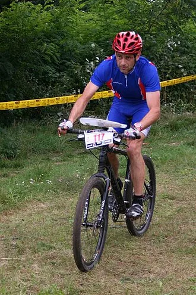
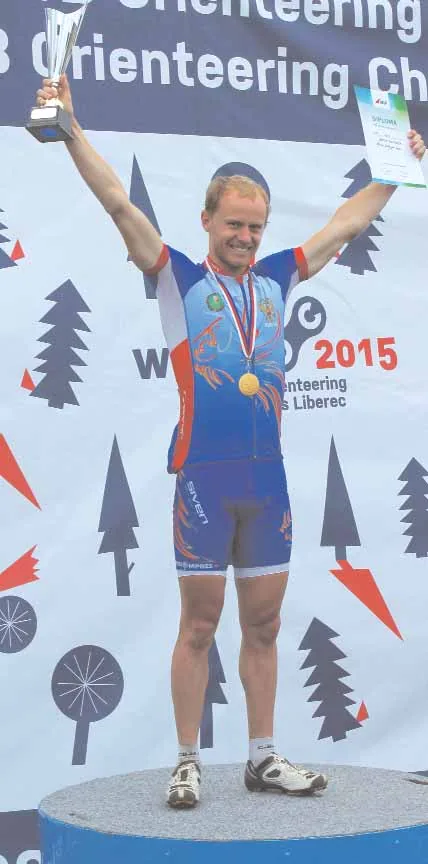
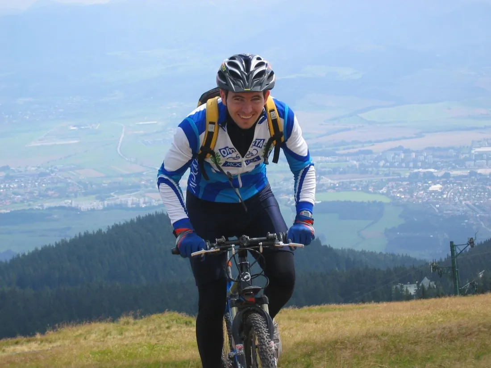
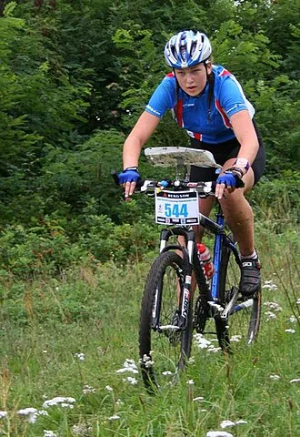
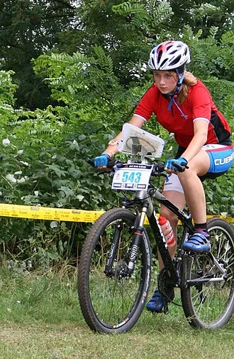
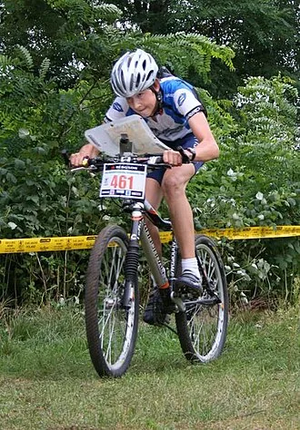
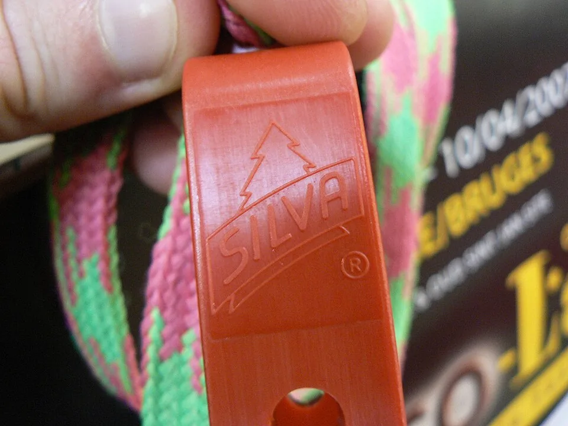

Первые титулы и новый вид ориентирования
- Первый опыт
- 1994, Санкт-Петербург
- Первый чемпионат
- 1996, Лемболово
- Первые победители
- Корчагин и Петрова
- Мировой успех
- 2005, Руслан Грицан
- 1996Лемболово
- 2000Нижегородская обл
- 2004Орехово
- 2006Нижегородская обл
- 2007Васкелово
- 2008Кыштым
- 2009Тула
- 2011Нижний Новгород
- 2012Ковров
- 2013Октябрьский
- 2014Пенза
- 2015Сокольский р-н
- 2016Москва
- 2017Ковров
- 2018Дёмино
- 2019Кавголово
- 2020Томилинский лесопарк
- 2021Воронеж
- 2022Ковров
- 2023Химки
- 2024Москва
- 2025Ярославль
- 2026Нижний Новгород
Начало с трёх велосипедов
В отличие от бегового и лыжного ориентирования, отечественное велоориентирование родилось уже после распада СССР. Виктор Бородин вспоминал экспериментальный старт в Санкт-Петербурге 6 октября 1994 года, на закрытии летнего сезона: шестикилометровую трассу в заданном направлении прошли трое участников, двое — на складных «Камах», один — на горном велосипеде. В 1995-м появились отдельные велосипедные дистанции, а в июле двое петербуржцев съездили на этап Кубка Финляндии и убедились, что карты, трассы и правила у них совпадают с финскими.
Почему велоориентирование — не просто беговой ориентир на двух колёсах
Для велосипедиста важны не только расстояние по прямой и горизонтали, но и то, по какой дорожке можно ехать быстро, а на какой придётся терять скорость или даже спешиваться. Более длинный объезд по хорошему покрытию нередко оказывается выгоднее короткой лесной тропы. Чтение карты происходит на высокой скорости, а решения о поворотах принимаются за секунды; при этом нужно безопасно управлять велосипедом и учитывать особенности разрешённых путей движения.
В середине 1990-х это было особенно непривычно. Специальное крепление для карты, подготовка велосипеда к ударам и грязи, тренировочная методика и сама карта дорожной сети ещё входили в российский спортивный обиход. Поэтому рассказ Виктора Бородина о первых трёх участниках, включая две складные «Камы», — не просто анекдот, а свидетельство рождения новой техники ориентирования из энтузиазма нескольких человек.
Лемболово, сентябрь 1996: первый российский чемпионат
13–15 сентября 1996 года под Лемболовом состоялся первый чемпионат России по ориентированию на маунтин-байках — через неделю после первого Кубка России, разыгранного в рамках финала бегового чемпионата в Алоле. В программу вошли велокросс 13 сентября, спринт 14 сентября и классика 15 сентября.

Здесь сразу появились два абсолютных героя: Виктор Корчагин (Московская область) и Екатерина Петрова (Санкт-Петербург) выиграли все три гонки. За победу по сумме дней им достались новые горные велосипеды — для середины 1990-х действительно весомый приз. Рассказ организатора и таблицы результатов доносят эту историю до нас почти покадрово.
А был ли чемпионат СССР на велосипеде? В календарных материалах и исторической хронике ФСОР официальных чемпионатов СССР по велоориентированию не обнаружено. Описанные первые российские опыты относятся к 1994 году, чемпионат — к 1996-му. Более ранние единичные велостарты теоретически могли проводиться, но оснований называть их чемпионатами СССР нет.
Первые протоколы: кто стоял рядом с Корчагиным и Петровой
По результатам трёх дней Лемболово-1996 видно, что за первыми чемпионами была ещё небольшая, но очень разная по опыту группа. В велокроссе 13 сентября вторым и третьим среди мужчин были Вячеслав Семёнов и Андрей Колобов, среди женщин — Анастасия Фёдорова и Гюльнара Пашаева. В спринте 14 сентября вторым стал Тарас Фёдоров из Колпино; у женщин Пашаева и Фёдорова поменялись местами. Так протокол сохранил имена тех, кто вместе с фаворитами фактически создавал новое российское соревнование.
По той же карточке видно, почему историю этого турнира нельзя пересказать только словами «первый чемпионат». Три разных гонки за три дня были способом опробовать, что вообще считать хорошей велосипедной дистанцией. Участникам приходилось искать баланс между быстрым движением, чтением карты и надёжностью техники.
От эксперимента — к большим чемпионатам

Участников поначалу было немного: на чемпионате 17 августа 2000 года в Нижегородской области в основной группе значились двенадцать человек. Но дисциплина росла. 4 сентября 2004 года в Орехове разыграли титулы в эстафете, а на спринте чемпионата 25 июня 2007 года в Васкелове победили Максим Журкин и Надия Микрюкова, Руслан Грицан был вторым.
2007: Орехово и Васкелово — уже настоящая конкуренция
Показателен чемпионат России в Ленинградской области в июне 2007 года. Соревнования проводились в районе Васкелово. В спринте выиграли Максим Журкин и Надия Микрюкова, причём прославленный Руслан Грицан был вторым. В классике 26 июня сильнейшими стали Валерий Глухов и Надия Микрюкова; Виктор Корчагин опередил Грицана, но уступил Глухову.
В эстафете 27 июня мужской подиум тоже оказался широким: победила Московская область (Виктор Корчагин, Павел Сысоев, Валерий Глухов), второй стала Москва (Руслан Грицан, Павел Благих, Максим Журкин), третьим — Санкт-Петербург. В женской эстафете выиграла Карелия. Это уже не история троих первопроходцев: несколько территориальных команд способны были бороться за медали на разных типах дистанций.
Руслан Грицан, Антон Фолифоров и смена поколений
В 2002 году состоялся первый чемпионат мира IOF по велоориентированию, а в 2005-м Руслан Грицан стал первым российским чемпионом мира в этой дисциплине. Позже важнейшим именем стал Антон Фолифоров. Соревнования на велосипедах требуют не только техники чтения карты, но и умения сохранять скорость, контролировать выбор дорожек и мгновенно реагировать на перепады покрытия.
Герои продолжают сменяться: общий старт 27 июня 2025 года в Ярославле выиграли Антон Фолифоров и Светлана Фолифорова; спринт 6 сентября 2026 года в Химках — Валерий Глухов и Светлана Фолифорова. Между первым стартом на складных велосипедах и современными чемпионатами — три десятилетия взросления вида спорта.
2011: три личных золота Фолифорова

Карточки чемпионата 25 мая, 28 мая и 29 мая 2011 года фиксируют редкую серию: Антон Фолифоров выиграл классику, лонг и спринт. В каждой из этих гонок следом за ним на подиуме оказывались Руслан Грицан и/или Валерий Глухов. Преимущество в столь разных форматах показывало универсальность будущего многократного чемпиона мира.
При этом женская часть первенства не имела одного бессменного победителя. В классике сильнейшей была Ксения Черных, на длинной дистанции — Наталья Щербакова, в спринте — Надия Микрюкова. Эти три чемпионки напоминают, что история российской школы велоориентирования не должна сводиться к мужской дуэли Грицана и Фолифорова.
От отечественных лесов к международным медалям
Впервые чемпионы мира по велоориентированию были определены во французском Фонтенбло в 2002 году. Виктор Корчагин выиграл бронзу чемпионата мира 2004 года, Руслан Грицан в 2005-м завоевал сразу два золота — на миддле и лонге. В 2009 году российская мужская эстафета впервые выиграла мировое первенство, а позднее Антон Фолифоров стал одной из самых ярких звёзд дисциплины: на чемпионате мира 2016 года он взял золото на трёх личных дистанциях.
Не менее важны российские спортсменки. Ксения Черных стала двукратной чемпионкой мира в 2007 году, а Ольга Шипилова-Виноградова победила на нескольких мировых первенствах в 2010-х. Подробнее эти международные успехи разобраны в соседней статье о чемпионатах мира по велоориентированию. Внутренние же протоколы помогают увидеть ранние выступления тех же спортсменов задолго до их наиболее известных побед.




Как отмечались велосипедисты: от карточки до чипа

Первые российские велочемпионаты начались ещё в эпоху бумажных карточек и механических компостеров. Такие способы отметки в спортивном ориентировании вообще были привычны в 1990-х, но прямого подтверждения, какой именно системой пользовались участники самого первого велочемпионата в Лемболово в 1996 году, пока не обнаружено. Поэтому по одному лишь году соревнования неверно объявлять, что там стояли компостеры или уже использовалась электроника.
Для велосипедиста способ отметки особенно важен: подойти к пункту, удержать велосипед, достать карточку и пробить нужное окошко — совсем не то же самое, что продолжить движение после быстрого контакта электронного чипа со станцией. Системы SPORTident и российская SFR сделали проверку КП быстрее и точнее; в них сохраняются номер и время пункта. Однако контактная отметка всё ещё требует поднести чип к станции, а бесконтактная уменьшает задержку на высокой скорости. Правила допускают оба способа, а на финише данные считываются и сверяются с заданной последовательностью.
Отдельная инженерная проблема велоориентирования — финиш на скорости. В интервью журнала «Азимут» (2010) Дмитрий Налётов объясняет, почему отмечаться чипом на самой линии финиша лыжникам и велосипедистам неудобно, а порой небезопасно. Поэтому применяют отдельные решения хронометража: фотофиниш, датчики пересечения линии, в том числе систему AMB. Позже распространились бесконтактные технологии, которые ещё сильнее уменьшили необходимость тормозить ради отметки.
В обзоре «Азимута» за 2019 год можно сравнить особенности трёх систем — SPORTident, SFR и финской EMIT. У последней электронная E-card дополнительно оставляет механический прокол на бумажной вставке — любопытный мост между двумя эпохами. При этом надёжных данных о конкретном годе перехода чемпионатов России по велоориентированию на электронную отметку пока нет: его нельзя выводить просто из даты появления системы на других российских соревнованиях.
Смотреть
Записи российских чемпионатов по велоориентированию: эстафеты, многодневные турниры и репортажи. Ссылки взяты из календаря O-Maps: